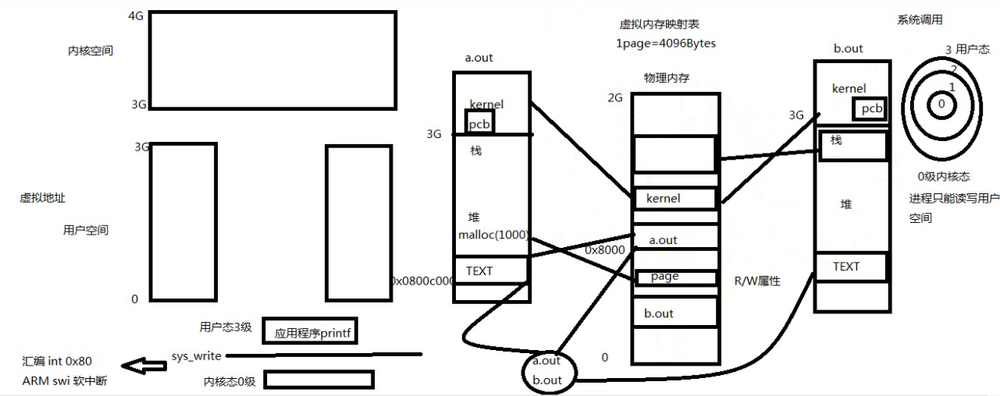

ulimit -a 查看进程可以使用的资源上限
ulimit -n 4096 改变最大打开文件上限，软硬一起改，但不能超过硬限制数
cat /proc/self/limits 查看详细的资源上限信息
设置的限制有两种： 硬限制和软限制
硬限制是可以在任何时候任何进程中设置，但硬限制只能由超级用户提起
软限制是内核实际执行的限制，任何进程都可以将软限制设置为任意小于等于对进程限制的硬限制的值
中断
中断就是一个硬件或软件请求，要求CPU暂停当前的工作，去处理更重要的事情。
比如，在x86机器上可以通过int指令进行软件中断，而在磁盘完成读写操作后会向CPU发起硬件中断。
中断有两个重要的属性，中断号和中断处理程序。中断号用来标识不同的中断，不同的中断具有不同的中断处理程序。
在操作系统内核中维护着一个中断向量表（Interrupt Vector Table），这个数组存储了所有中断处理程序的地址，
而中断号就是相应中断在中断向量表中的偏移量。
虚拟内存
用户空间和内核空间
都是虚拟地址，通过虚拟内存映射表，映射到物理内存
每个进程都有自己独立的PCB，PCB在内核中，每个PCB都有一个指向文件表述符表的指针
每个进程都分配有自己的虚拟空间
CPU权限
内存分配空间（page)，每个page对不同权限的CPU都有一个权限（例如读写等）
TEXT：代码段
每个进程都有很多环境变量（指定操作系统运行环境的一些参数） env命令可以查看

用户空间
栈中的数据如果越界，会影响环境变量和命令行参数
再往上就是内核空间


进程环境
每个进程都有自己的环境
libc:C标准库
libc中定义的全局变量environ指向环境变量表，environ没有包含在任何头文件中，所 以在使用时要用extern声明。
打印环境变量

查看环境变量：echo $PATH